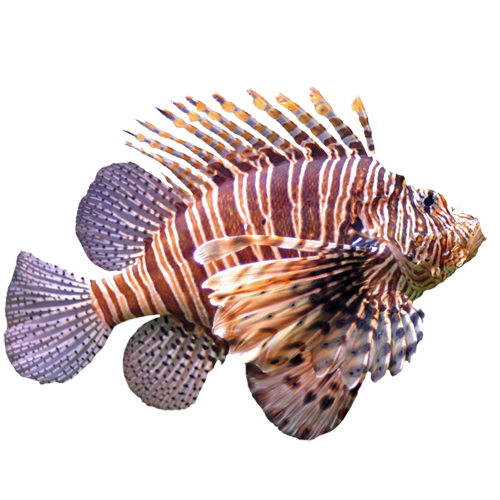

Lion Fish
Pterois is a genus of venomous marine fish, commonly known as lionfish, native to the Indo-Pacific. Also called firefish, turkeyfish, tastyfish, or butterfly-cod, it is characterized by conspicuous warning coloration with red, white, creamy, or black bands, showy pectoral fins, and venomous, spiky fin rays. Pterois radiata, Pterois volitans, and Pterois miles are the most commonly studied species in the genus. Pterois species are popular aquarium fish. P. volitans and P. miles are recent and significant invasive species in the west Atlantic, Caribbean Sea and Mediterranean Sea
